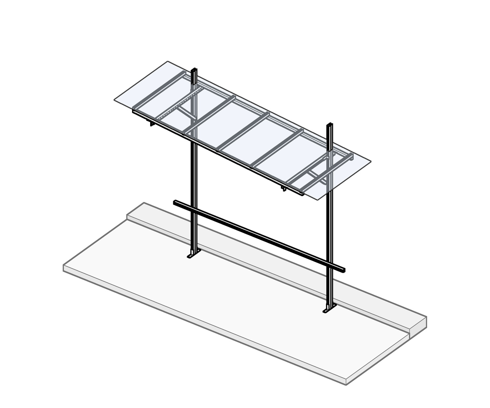

OPEN SHELTER
OBS-10
×2

Two-post bus shelter, 3.05 m / 10 ft, for sidewalks ≥ 1.52 m / 5 ft
Open-source hardware. Bolted strut channel, no welding, no metal cutting.
DRAFT REV A
USE ONLY WITH A
LOCAL ENGINEER'S STAMP